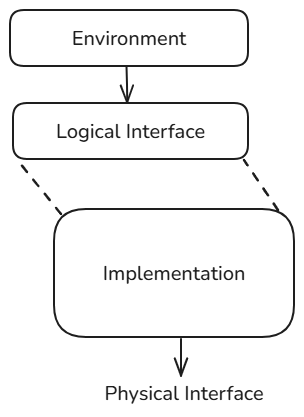

Abstraction Levels¶
Overview¶
ZuSpec-dataclasses models organize device interfaces across three key abstraction areas, each serving different modeling and verification needs.
Logical Interface - How software sees and interacts with the device
Operation level: High-level operations (e.g., “start DMA transfer”)
MMIO level: Register-based control and status visibility
Physical Interface - How the rest of the design interacts with the device
Operation level: High-level operations (e.g., “start DMA transfer”)
MMIO: Memory-mapped register transactions
TLM: Transaction-level modeling (bus protocols)
Protocol: Pin-level signaling and timing
Internal Implementation - How the device implements its core algorithm
Algorithmic: Functional behavior with or without timing
Cycle-accurate: Detailed microarchitectural implementation
Register-Transfer Level (RTL): Synthesizable implementation
These definitions extend to the system level as well:

A primary difference between device and system view is more diversity in the abstraction levels employed. For example, an RTL level of abstraction might be employed for a key device within the system, while the rest is implemented at the algorithmic level. This enables the full system to be simulated more quickly, while preserving accuracy within the target device.
Logical Interface¶
The logical interface captures how the environment (typically software) interacts with a device. There are two key abstraction levels in play here:
Operation Level¶
The operation level focuses on key device operations exposed as async methods, representing the driver-level view of the device.
Key characteristics:
Implements device operations as async methods
Effectively driver-level abstraction
Hides register-level details behind operation semantics
For devices supporting independent concurrent operations, group related operations into Protocol classes
Example: DMA operation interface
@zdc.dataclass
class DmaOperations(Protocol):
async def transfer(self, src: int, dst: int, size: int) -> None:
"""Perform a complete DMA transfer"""
# Implementation uses MMIO level internally
pass
MMIO Level¶
The MMIO level focuses on memory-mapped registers and events, providing register-based control and visibility into device state.
Key characteristics:
Interface is the register file and associated events
Operation-level methods are typically implemented in terms of this interface
Captures interrupt protocols through event abstractions
Memory-based descriptors are implied but not explicitly modeled
Core components:
Register files (
zdc.RegFile): Collections of memory-mapped registersEvents (
zdc.Event): Logical events like interrupts, completions, errorsProtocol (
Protocol): Grouping of related registers and events
Example: DMA MMIO interface
@zdc.dataclass
class DmaRegs(zdc.RegFile):
src_addr: zdc.Reg[zdc.u32] # Source address register
dst_addr: zdc.Reg[zdc.u32] # Destination address register
length: zdc.Reg[zdc.u32] # Transfer length register
control: zdc.Reg[zdc.u8] # Control register (start, stop, etc.)
status: zdc.Reg[zdc.u8] # Status register (busy, error, done)
@zdc.dataclass
class DmaMmio(Protocol):
regs: DmaRegs # Register file
transfer_complete: zdc.Event # Interrupt event
transfer_error: zdc.Event # Error event
Physical Interface¶
The physical interface describes how the rest of the design interacts with the device at various levels of implementation detail.
Operation Level¶
Early in the design cycle, it is common make the device’s physical interface the same as the logical interface. This is because the internals of the device are often implemented in terms of operations.
MMIO Level¶
Device views intended for use by software often directly expose a MMIO physical interface. This allows software emulation frameworks (e.g. QEMU) to directly interact with the device.
TLM Level¶
Transaction-level modeling provides a higher-level abstraction of bus interactions, focusing on the transfer of data rather than signal-level details.
Key characteristics:
Abstract transaction passing instead of cycle-by-cycle bus activity
Faster simulation performance
Suitable for system-level verification and performance analysis
Common for virtual prototyping and software development
Protocol Level¶
Protocol-level modeling captures pin-accurate signaling and timing relationships between the device and other hardware components.
Key characteristics:
Models actual hardware signals and their timing
Captures protocol-specific handshaking (e.g., AXI, AHB, APB)
Used for detailed hardware verification
Includes clock-accurate behavior
Internal Implementation¶
The internal implementation models describe how the device realizes its functionality, from algorithmic behavior to cycle-accurate microarchitecture.
Algorithmic Level¶
Algorithmic modeling captures the functional behavior of the device with timing characteristics but without detailed cycle-by-cycle implementation.
Key characteristics:
Functional correctness with approximate timing
Models what the device does, not how it’s implemented
Suitable for performance modeling and early software development
Can be refined to more detailed implementations
Example use cases:
Golden reference models for verification
Performance estimation
Algorithm validation
Early software/firmware development
Cycle-Accurate Level¶
Cycle-accurate modeling provides detailed microarchitectural implementation, capturing behavior at individual clock cycle boundaries.
Key characteristics:
Clock-cycle accurate state transitions
Models pipeline stages, arbitration, and resource conflicts
Captures detailed timing and performance characteristics
Used for RTL correlation and detailed performance analysis
Design considerations:
Operation granularity: How frequently is the block evaluated?
At operational boundaries (coarse-grained)
At implementation boundaries (fine-grained)
Multiple levels of detail may coexist
Timing assumptions: What timing guarantees are provided?
Cycle boundaries
Pipeline depth
Resource availability
Register-Transfer Level (RTL)¶
RTL modeling provides a synthesizable description of design behavior that can be taken directly to synthesis.